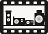
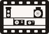

Las 4 cámaras narran la evolución de la fotografía de izq a der. Más limpio y legible a tamaños pequeños.

TLR y DSLR arriba en los extremos, rangefinder y compacta abajo en el centro. Más profundidad, más carácter de vitrina de colección.